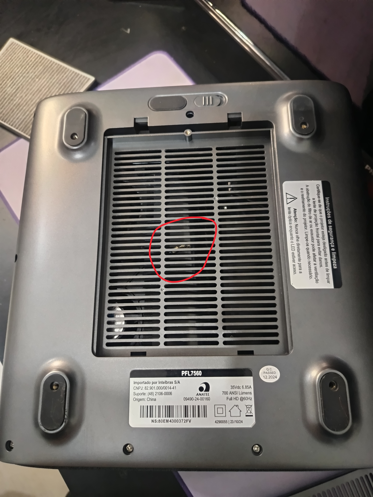
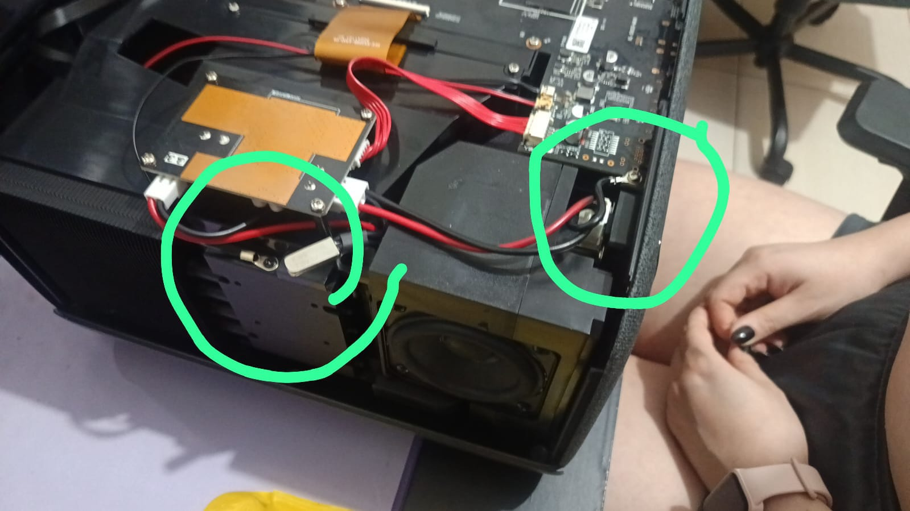
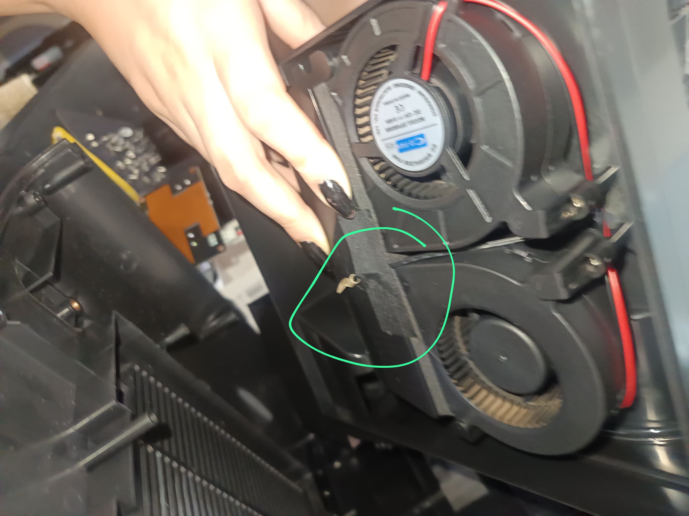
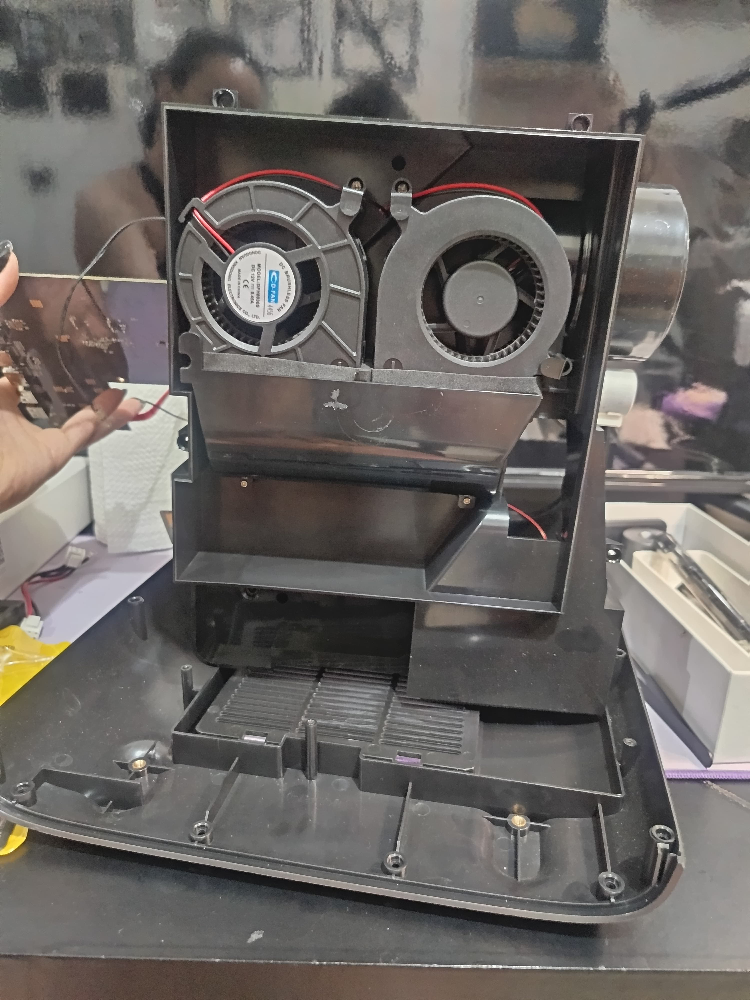
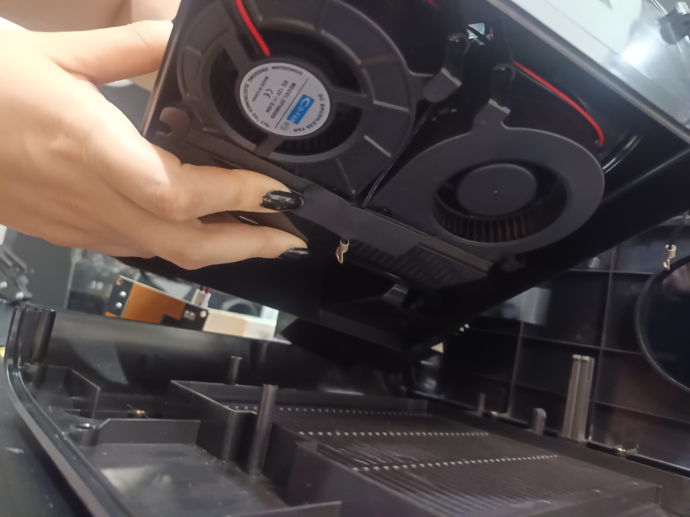
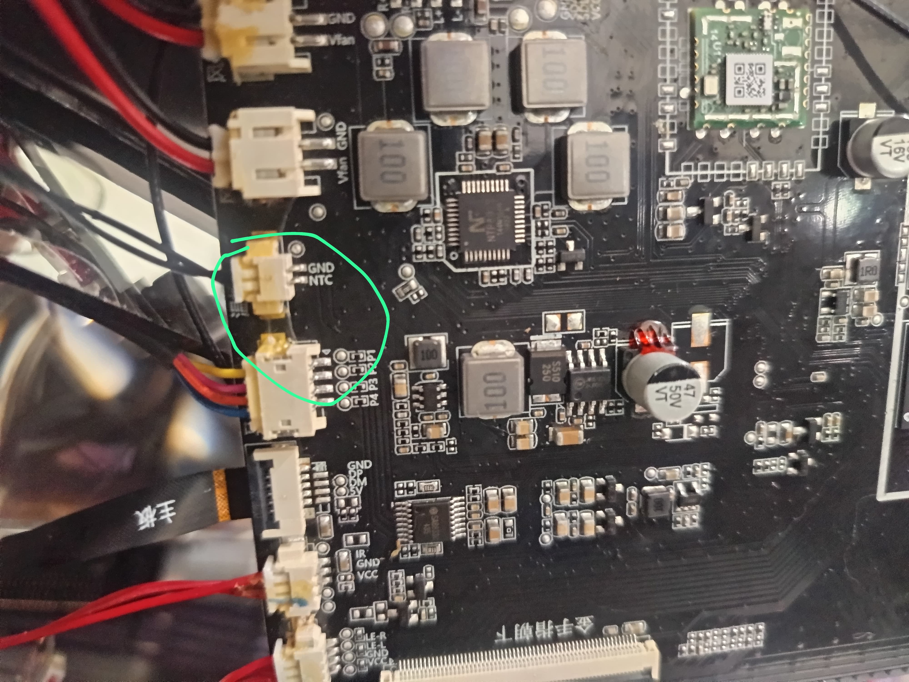
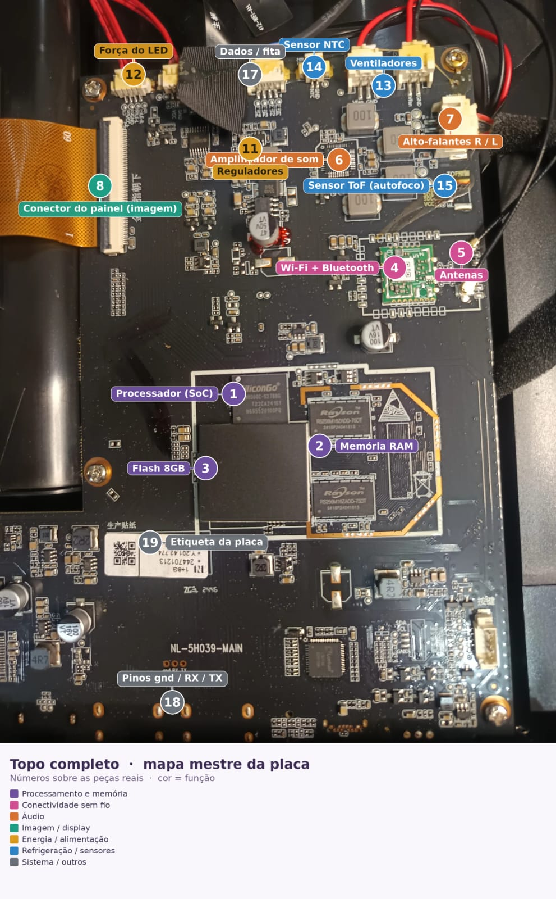
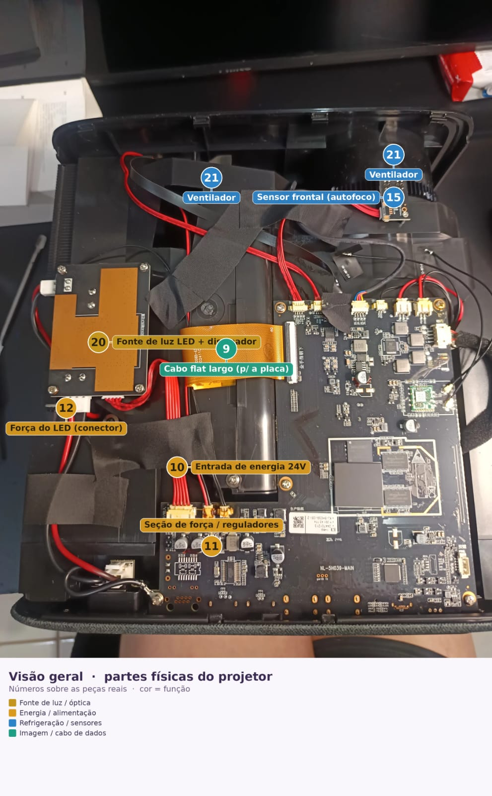

PFL7560 · dossiê de campo
Registro da sessão de abertura do projetor: comparativo térmico dos sensores por adb, teste de persistência do fix, desmontagem fotografada, identificação do cabo solto e correção do mapa da placa.
Correções posteriores (2026-10-29, doc 40). Este dossiê registra a sessão de julho; três leituras dele mudaram com o aparelho aberto de novo:
Ventiladores: são 3, não 2. Os 2 sopradores D-FAN DFH8030S (12 V, 0,45 A; não DFH8025S nem COFN), que a política térmica controla (gfc = 2), e 1 axial no exaustor do dissipador do LED, sem controle por software (OPT-S6). O mapa anterior, que contava 3, estava certo nesse ponto.
NTC1 (gtt1) não mede a óptica. É um termistor encapsulado num olhal de latão parafusado no topo do bloco dissipador do LED; mede o dissipador do LED. Nenhum sensor do aparelho mede o polarizador ou o LCD (OPT-S7).
Dois olhais diferentes. O olhal solto entre os sopradores, tratado abaixo, segue classificado como aterramento. O olhal parafusado no bloco do LED é o sensor.
O que foi feito nesta sessão
O script pfl7560-evidencias.sh achou o projetor na rede sozinho (adb TCP 5555) e leu o estado. Veredito automático: já estava corrigido.
Revertendo o térmico ao stock e reaplicando o fix, capturamos a assinatura do bug do mux: no stock os 2 NTC leem idêntico; com o fix o 2º sensor revela o calor real.
Gravamos o fix direto na partição /vendor (ext4 real, não overlay) e reiniciamos. Confirmado: o fix sobrevive ao reboot.
Abertura do gabinete: 2 sopradores DFH8030S e um 3º ventilador no exaustor do LED, a placa NL-5H039-MAIN e um cabo que "sempre ficou solto".
O cabo é o aterramento do header GND/NTC — bond de chassi/EMI, não o terra funcional do sensor. Não afeta a leitura de temperatura.
Inspeção da placa corrigiu o mapa anterior: o SoC e o Flash estavam trocados, entre outros ajustes.
Registro fotográfico




DFH8030S (12 V, 0,45 A), os que o firmware controla (CoolingFan = 2). Há um 3º ventilador, axial, no exaustor do LED, sem controle.
DFH8030S, 12 V, 0,45 A), o mesmo componente citado na config térmica.
GND / NTC com o conector de 2 vias plugado (o terra funcional do sensor).Aterramento de chassi — não o terra do sensor
O cabo tem uma ponta fixa no header GND/NTC e a outra num olhal que estava solto no fundo, preso com fita isolante. É um jumper de aterramento / EMI: leva o terra do circuito até um ponto metálico (chassi ou dissipador) através do olhal, que deveria estar parafusado. O terra funcional do termistor chega pelo conector de 2 vias que está plugado — por isso a leitura de temperatura nunca dependeu desse olhal.
A prova (do próprio firmware). Quando o terra do NTC abre, o firmware registra LSADC Error com um valor absurdo e rejeita a amostra. Esse padrão aparece uma única vez (um glitch) no heat.logcat do stock. Todas as leituras usadas na pesquisa vêm como Achieve Balance (válidas) — logo o terra do sensor esteve íntegro o tempo todo.
Além disso, um terra com mau contato adiciona resistência em série, que o firmware atribui ao termistor → leitura puxada para mais frio. Ou seja, os 65,8 °C medidos são um piso, não inflação.
Conclusão: a tese central (2º sensor cego pelo mux) permanece intacta e sai reforçada. O que fazer com o cabo é opcional — reparafusar melhora EMI/aterramento; não afeta o térmico.
Correções ao mapa anterior
SoC e Flash estavam trocados. O chip rotulado "SoC" traz a serigrafia SiliconGo T22CA2415T — um controlador de armazenamento (eMMC/Flash), não um SoC Android. O SoC HiSilicon Hi3751V553 é o chip grande ao lado das memórias, sob espalhador de calor. Rótulos 1 e 3 invertidos.
São 3 ventiladores, como o mapa anterior dizia: 2 sopradores DFH8030S controlados (gfc = 2) e 1 axial no exaustor do LED, sem controle.
Entrada ~35 Vdc / 6,85 A (etiqueta), não 24 V. RAM = 1 GB (2× Rayson).
Header GND/NTC identificado — 2 termistores muxados; o olhal solto é aterramento de chassi (ver acima). O NTC do gtt1 chega por fio a outro olhal, parafusado no topo do bloco do LED (2026-10-29).
Processador (bigfish, Android 9). Antes rotulado "Flash".
2× Rayson RS256M16ZADD DDR.
Controlador SiliconGo T22CA2415T. Antes rotulado "SoC".
Módulo combo. Wi-Fi ativo só na tela inicial.
Alimentação principal (6,85 A).
Conector de potência da fonte de luz.
2 sopradores DFH8030S controlados + 1 axial no exaustor do LED (corrigido em 2026-10-29).
2 termistores ZL103SAF muxados (BL1551B @ GPIO4_4).
Autofoco frontal.
Saída de imagem p/ o bloco óptico.
R / L + amplificador.
Console serial de depuração.


Comparativo antes / depois
| Métrica | Antes (stock) | Depois (fix) | Fonte |
|---|---|---|---|
| Sensor NTC0 | 26,4 °C | 24,5 °C | adb gtt 0 |
| Sensor NTC1 (bloco do LED) | 26,4 °C | 65,8 °C | adb gtt 1 |
| Divergência entre sensores | 0 (mux morto) | ~41 °C (mux vivo) | — |
| Ventiladores | 555 / 559 | 1000 / 1000 | adb gfs |
| Saída de ar (termômetro IR) | 46,7 °C | 37,2 °C | histórico (doc 09) |
Persistência do fix. A correção foi gravada na partição /vendor real (ext4, sem overlay volátil) e sobreviveu ao reboot — md5 1ad641ed confirmado após reiniciar, com gtt1 divergindo de novo. Detalhes em research/26-persistencia-do-fix.md.